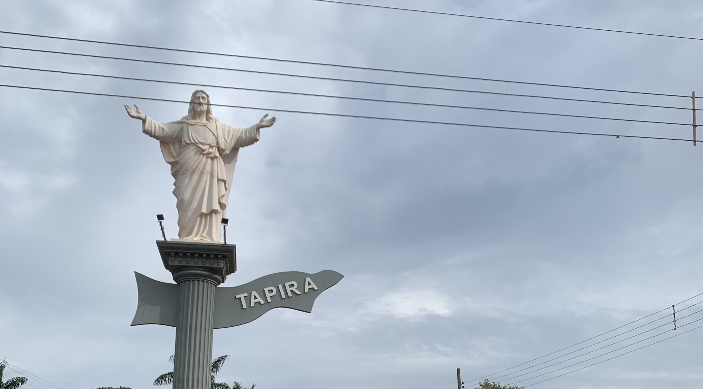

Do campo à cidade, um fluxo de oportunidades se estendem, um caminho se traça e tromba em várias vidas. Se revelando em cada fase do mundo.
A terra fértil é o berço da agricultura, onde as sementes são semeadas, cultivadas e colhidas. É lá que a conexão com a natureza é profunda e molda seus valores.
Contudo, é na cidade que muitas dessas colheitas encontram seu destino. Onde os produtos são valorizado e transformados em alimentos para milhoẽs de pessoas, oferecendo um mercado vasto e diversificado. Entretanto, esses alimentos não chegam à todos, no Brasil há um alto índice de fome e pobreza.
Além disso, as oportunidades não se limitam apenas à agricultura mas também na métropole, assim, um dependendo do outro, gerando um centro de inovações.
Com as indústrias, as diversidades e a era tecnólogica, impulsionando cada vez mais ao crescimento econômico. Aumentando a produtividade e a qualidade das mercadorias. Mas o fluxo não tem uma única direção, muitas das mercadorias não chegam ao seu destino final. A conectividade entre as duas tem capacidade de criar relações e pode melhorar o sistema.
Impulsionando o desenvolvimento e melhorando a qualidade de vida das comunidades.
"A natureza tem uma estrutura feminina: não sabe se defender, mas sabe de vingar como ninguém" afirmou Marina Silva, uma historiadora e ambientalista. Contudo, pode ser interpretado como um alerta para os efeitos das ações humanas. Devemos abordar esse assunto para discutir sobre o consumismo e seus impactos sociais, ambientais e econômicos.
Ressalta-se que o consumismo é um ato relacionado ao consumo excessivo, ou seja, comprar oque não é necessário. Porém, quanto mais se compra, mais se produz, assim, gerando empregos. Levando assim, o aumento do desperdício e da pobreza, sendo crucial adotar medidas mais responsáveis e sustentáveis.
Em um mundo mais consciente sobre a importância da conservação, cabe a cada indivíduo desempenhar um papel fundamental na promoção da sustentabilidade. Com a analogia da natureza com uma estrutura feminina idealizando a necessidade urgente do preservar e restaurar a natureza, como também enfrentar as consequências de sua vingança.
Mediante os fatos expostos, é dever que providências sejam tomadas quanto antes, pois, o campo e a cidade são dependentes um do outro. Escolhas diárias, como reduzir o consumo de plásticos descartáveis, reciclar e optar por um mundo mais responsável, são algumas medidas. Portanto, cabe a sociedade agir para garantir um futuro melhor entre a humanidade e a natureza com o consumismo.